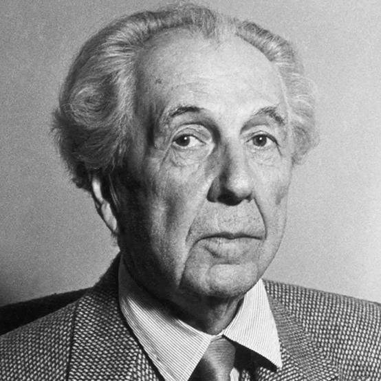

architecture expotition
about franck
Original Series ®
©2025
(about)
©2025
Today,
I'm going to talk to you about
Frank Lloyd Wright, an American architect considered one of
the greatest of the 20th century.
He dedicated his life to the art and science of
designing unique buildings, constantly pushing the
limits of conventional architecture. His vision was to
create structures that were not only striking but also
deeply connected to their surroundings.
He believed every building should grow naturally
from its environment, as an extension of the
landscape. This philosophy, which he called "organic
architecture," emphasized harmony between
human
creations and nature. By considering local materials,
terrain, climate, and vegetation, he aimed to design
spaces that felt alive, inviting, and balanced with
nature, rather than imposed upon it. His work thus
became a seamless blend of art, nature, and function.
information:
About Franck
8 juin 1867
9 avril 1959
American

biography
A Life of Architecture
A Life of Architecture
visionary
Frank Lloyd Wright was an American architect
born in 1867 in Wisconsin and
passed away in 1959. He is considered
one of the greatest architects of the 20th
century. From a young age, he was
interested in nature and construction,
influenced by his mother and the
landscapes of his childhood. Wright
developed a unique style called organic
architecture, which aimed to blend
buildings with their natural surroundings.
Some of his most famous works include
Fallingwater, a house built over a stream,
and the Guggenheim Museum in New
York, known for its spiral shape. Wright
designed over 1,000 projects during his
career,many of which are still studied
and admired today.
Frank Lloyd Wright didn't just want to
build structures—he wanted them to
"live" with their environment. That's why
he developed the idea of organic
architecture. This style seeks to create
harmony between people, nature, and
buildings. Natural materials like stone
and wood are often used, and
the shapes of the buildings often follow the
landscape.
This approach can be seen in works like
Taliesin and the Usonian Houses. Wright
believed that architecture should
respect human needs while highlighting
the beauty of the natural world. His style
has inspired generations of architects around the globe.
home
work
about
Social Media:
menu:
©Design franck lloyd wright® 2025
Privacy Policy&Legal Terms
Designed by inraci